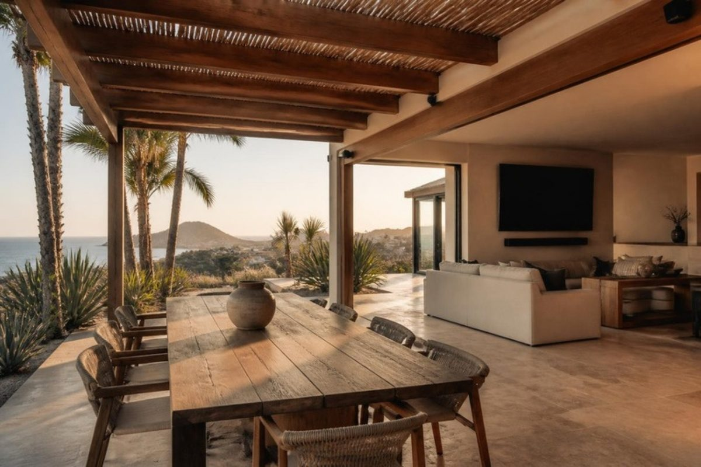

Audio y video en Los Cabos
Música en toda la casa y en la terraza, salas de TV sin cables a la vista y cine en casa, integrado a las escenas de iluminación. Diseñamos, cableamos e instalamos sistemas Sonos, Sonance y James en villas y residencias de Baja California Sur.
Soluciones
Trabajamos principalmente con Sonos, Sonance, James, Blustream y Nexus 21, y también con otras marcas: nos adaptamos al equipo que ya tengas o al que quieras usar.
- Audio por zonas: Sonos Amp y Port con bocinas de empotrar Sonance; control desde app, keypads o voz.
- Audio de exterior: sistemas satélite + subwoofer enterrado Sonance y James Loudspeaker para terrazas, albercas y jardines, resistentes al ambiente salino de Los Cabos.
- Salas de TV y cine en casa: barras Sonos Arc Ultra y Beam, subwoofers, pantallas Samsung y soportes Sanus; cableado oculto y rack ordenado.
- Elevadores y mecanismos: elevadores de TV y proyector Nexus 21 para muebles y plafones.
- Distribución de video: matrices y extensores HDBaseT Blustream para varias pantallas desde un solo rack.
Cableado desde obra
Lo más económico es cablear audio y video en obra gris: cable de bocina, UTP Cat 6 y canalizaciones a cada punto. Entregamos el plano de puntos para tu electricista o lo instalamos nosotros, y dejamos un rack con UPS y protección eléctrica Panamax.
Integración
El audio se integra a las escenas de iluminación Lutron y al control por app, para que "modo cena" o "fiesta en terraza" enciendan luces, música y persianas a la vez.
Preguntas frecuentes
¿Las bocinas de exterior aguantan el clima de Los Cabos?
Usamos líneas diseñadas para exterior (Sonance, James) con tratamiento para sol, humedad y salinidad; aun así recomendamos ubicarlas bajo aleros o con cierta protección.
¿Puedo controlar todo desde una sola app?
Sí. Sonos tiene su app y además puede integrarse a los keypads y a la app de Lutron para escenas combinadas.
¿Tienes un proyecto en Los Cabos o La Paz?
Mándanos planos, fotos o una lista de equipos y te preparamos una propuesta por áreas y sistemas.